- 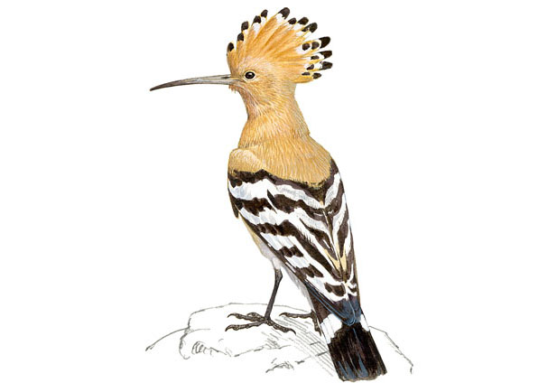
- 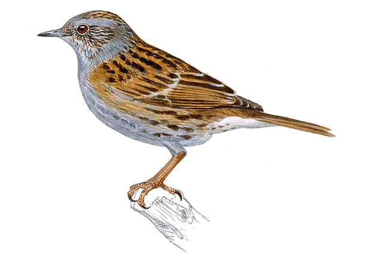
- 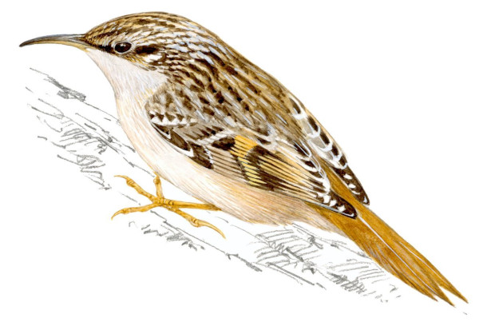
- 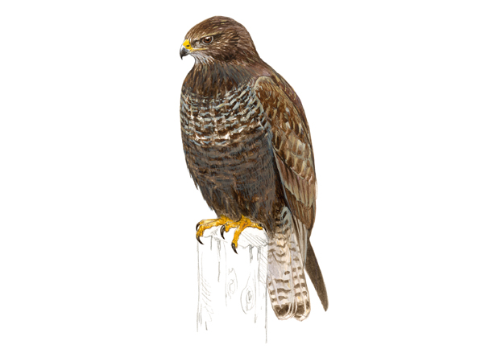
- 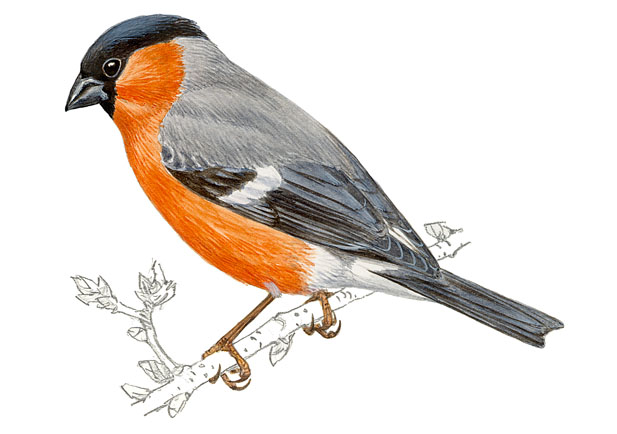
- 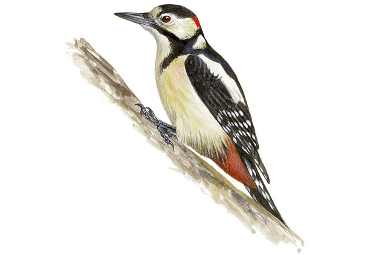
- 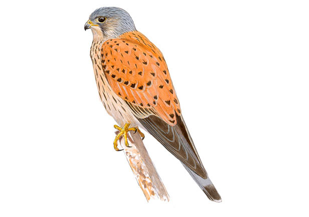
- 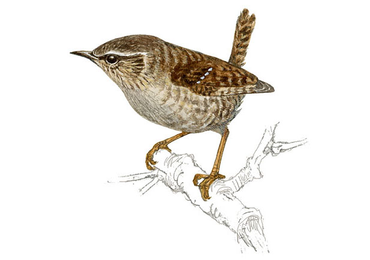
- 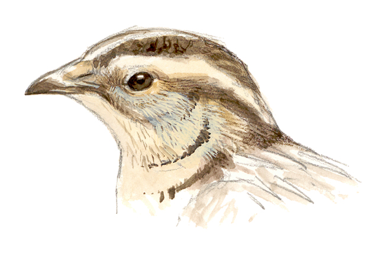
- 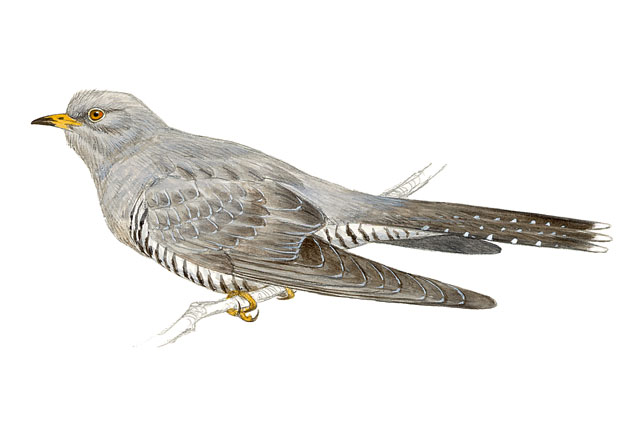
- 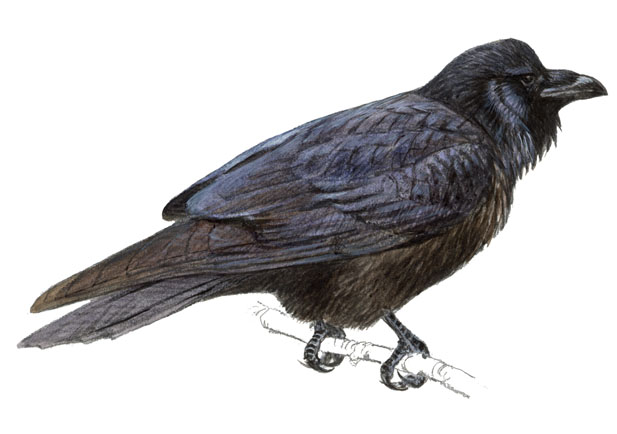
- 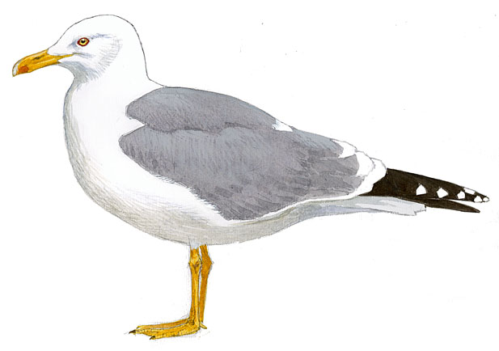
- 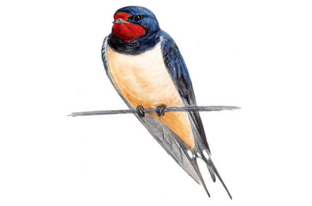
- 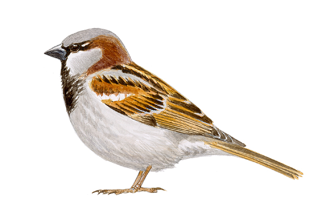
- 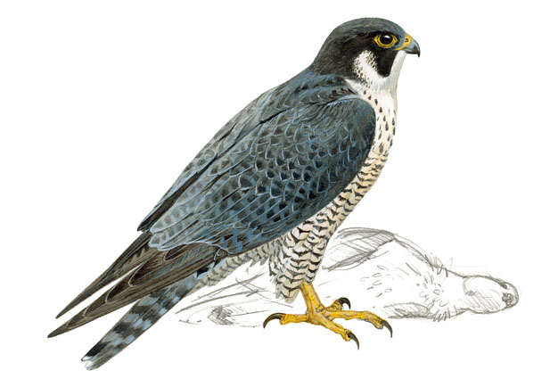
- 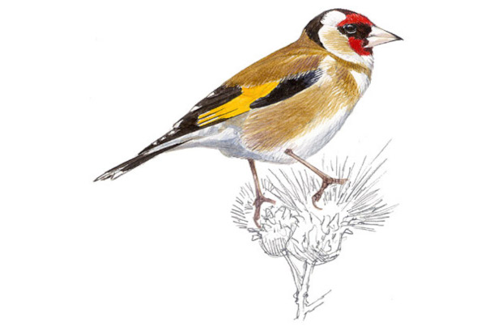
- 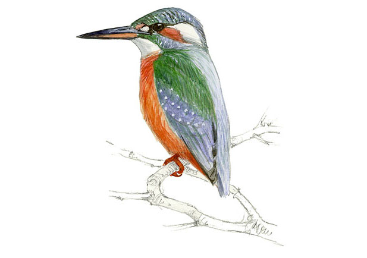
- 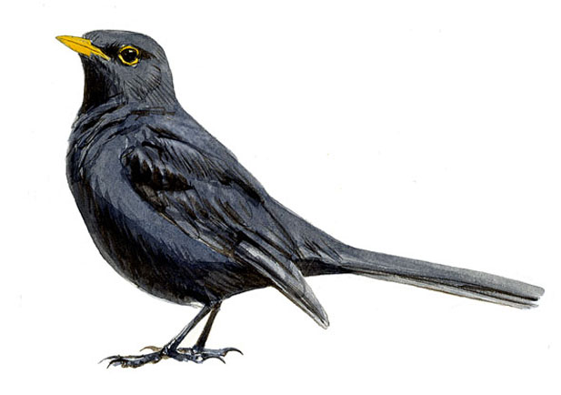
- 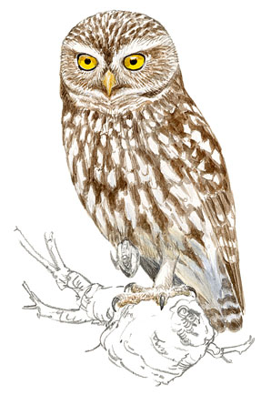
- 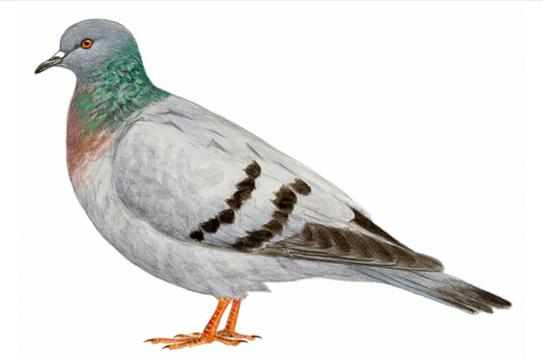
- 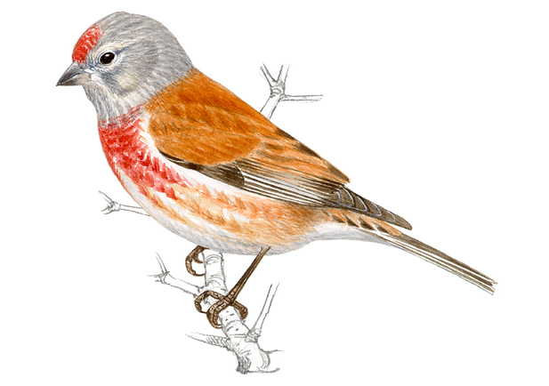
- 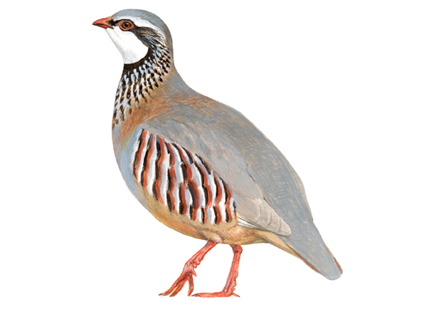
- 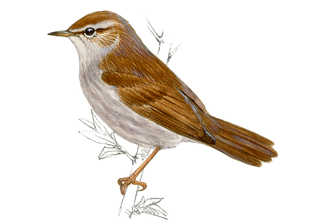
- 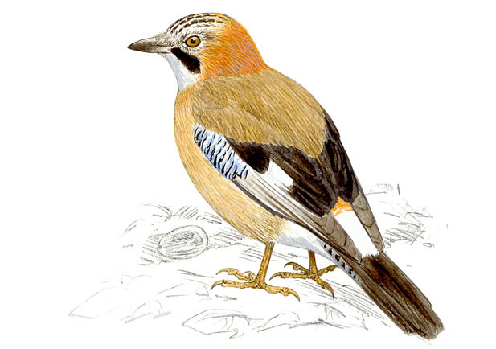
- 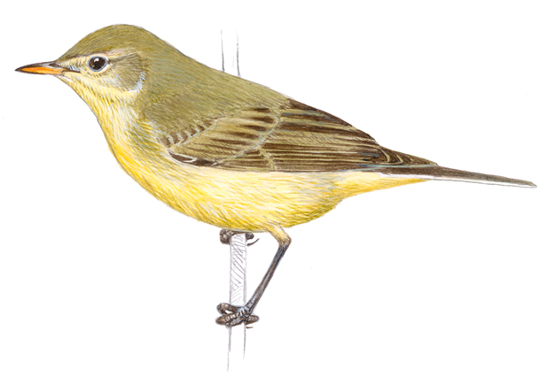
- 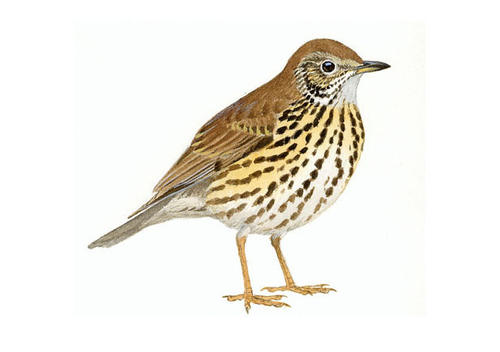
Bubela Común Nome científico: Upupa epops
A abubilla común é un ave de aspecto inconfundible, con tons ocres na metade anterior do corpo, e listas negras e brancas na metade posterior do dorso.
A pesar de que ambos os sexos resultan moi similares, o macho posúe a cor alaranxada do peito dun ton máis intenso. Loce na súa cabeza unha rechamante crista, de cor ocre e coas puntas negras, que adoita despregar ao pousarse, cando está inquieta ou durante o cortexo. Ten o pico longo e lixeiramente curvado, e unha cola ampla e negra, atravesada por unha banda branca. En voo presenta ás blanquinegras, moi anchas e redondeadas. Os aleteos son irregulares e describe lixeiras ondulaciones na súa traxectoria.
Fonte de textos e imaxes: SEO BirdLife | Juan Varela
A pesar de que ambos os sexos resultan moi similares, o macho posúe a cor alaranxada do peito dun ton máis intenso. Loce na súa cabeza unha rechamante crista, de cor ocre e coas puntas negras, que adoita despregar ao pousarse, cando está inquieta ou durante o cortexo. Ten o pico longo e lixeiramente curvado, e unha cola ampla e negra, atravesada por unha banda branca. En voo presenta ás blanquinegras, moi anchas e redondeadas. Os aleteos son irregulares e describe lixeiras ondulaciones na súa traxectoria.
Azulenta Común Nome científico: Prunella modularis
O acentor común é un paxaro do tamaño dun gorrión, co pico fino e puntiagudo, e as patas fortes e avermelladas.
De comportamento fuxidío, gústalle moverse entre a vexetación baixa e camiñar polo chan.
Ten as partes superiores da plumaxe marróns e con escamado pardo escuro, semellantes ao dorso dun gorrión común.
A cabeza, a garganta e o peito son dunha cor gris plomizo, máis intenso nos machos, coa zona auricular e o píleo marróns.
As partes posteriores do ventre posúen un ton gris máis claro, cos flancos marróns.
Os machos exhiben cabeza e garganta de cor castaña, en lugar de gris, e mostran toda a plumaxe fortemente listado de pardo escuro.
A base do seu pico é laranxa amarelada, mentres que os adultos presentan todo o pico negro.
Fonte de textos e imaxes: SEO BirdLife | Juan Varela
Subidor Común Nome científico: Certhia brachydactyla
Ave diminuta, insectívora e forestal.
Prospecta constantemente os troncos das árbores, dos que extrae alimento co seu pico, fino, longo e curvo.
A súa plumaxe resulta moi críptico.
O dorso e as ás do agateador común mostran un mosaico de cores marróns-castiñeiros de diferentes intensidades, salpicado con motas máis claras, grises ou crema.
As partes inferiores do seu corpo, pola contra, son de cor blancuzco, pero poucas veces obsérvanse, pois pasa gran parte do día pegado á cortiza dos troncos, e só realiza voos curtos e moi rápidos.
Rube habitualmente coa cabeza cara arriba, apoiándose sobre a súa cola. Esta é longa, parda, e componse de plumas con raquis groso e libre de barbas no seu extremo distal.
Fonte de textos e imaxes: SEO BirdLife | Juan Varela
Miñato Común Nome científico: Buteo buteo
É unha rapaz de mediano tamaño, complexión robusta e coloración moi variable, que posúe un aspecto bastante rechoncho cando lla observa pousada.
En voo exhibe unhas ás relativamente curtas e moi anchas e unha cola non demasiado longa, que frecuentemente desprega en abanico, grazas ao cal o ave pode practicar durante longo intre un voo sostido que alterna con cernidos ocasionais.
A súa plumaxe presenta numerosas variacións individuais, polo que se poden observar desde individuos moi claros ata exemplares bastante escuros.
Con todo, a coloración máis típica do adulto é dun ton marronáceo bastante homoxéneo nas rexións dorsais e lixeiramente máis clara nas ventrales, onde aparece unha franxa pectoral esbrancuxada de desigual extensión.
O macho presenta as partes inferiores de desiguais tons marróns e as coberteras dorsais con bordos pálidos; ademais, a súa cola está finamente barrada, pero carece da ancha banda terminal propia dos adultos. Visto ventralmente, non se aprecia con nitidez o reborde posterior escuro das ás, e tanto estas como o corpo dan a sensación de estar máis estriados que barrados.
Fonte de textos e imaxes: SEO BirdLife | Juan Varela
Cardeal Europeo Nome científico: Pyrrhula pyrrhula
O macho resulta inconfundible polo vermello intenso do seu peito e fazulas.
A femia tamén se recoñece sen dificultade, aínda que presenta unha coloración máis apagada.
Á súa vez, ambos os sexos posúen unha ampla boina negra que cobre toda a parte superior da cabeza e proxéctase cara ao pico, igualmente negro e curto.
Tamén son negras a cola e as ás, estas últimas amplas e cunha conspicua banda branca. En contraste con elas, en voo destacan o obispillo branco e o dorso gris cinza .
Fonte de textos e imaxes: SEO BirdLife | Juan Varela
Picapau Común Nome científico: Strix aluco
O pipapau común presenta unha voluminosa cabeza na que destacan uns enormes e globosos ollos negros, o que, unido á ausencia de penachos cefálicos (“orellas”) e ao seu aspecto rechoncho e robusto, permite diferencialo facilmente do resto das nosas rapaces nocturnas.
A súa plumaxe resulta extraordinariamente mimético e presenta unha gran variabilidade en canto a cor, xa que existen exemplares agrisados, avermellados e marróns.
En todos os casos, o deseño consiste nunha complexa mestura de punteados, barrados e vermiculados, que imitan á perfección a cortiza das árbores.
A cara é de cor blancuzco, agrisado ou avermellado, e nela destacan dúas listas esbrancuxadas a modo de “cellas”.
Fonte de textos e imaxes: SEO BirdLife | Juan Varela
Lagarteiro Común Nome científico: Falco tinnunculus
O peneireiro común é un pequeno falcónido, de longa cola e ás anchas e relativamente apuntadas, que presenta un acusado dimorfismo sexual tanto polo que respecta ao maior tamaño das femias como no relativo á coloración da plumaxe.
Os machos adultos posúen o dorso de cor avermellada, con manchas negras en cantidade variable, mentres que nas rexións inferiores, finamente punteadas, predominan os tons crema.
A cabeza é agrisada e aparece algo raiada de negro, en tanto que na cara destacan as fazulas esbrancuxadas e unha marcada bigotera escura.
As robustas femias, en cambio, exhiben tons máis homogéneamente pardos, coas rexións dorsais profusamente manchadas, do mesmo xeito que o peito e o ventre, ambos de tons ocráceos.
A bigotera, aínda que visible, resulta moito menos evidente que nos machos.
Fonte de textos e imaxes: SEO BirdLife | Juan Varela
Carriza Común Nome científico: Troglodytes troglodytes
O chochín paleártico é un pajarillo de pequeno tamaño, aspecto compacto, cabeza voluminosa e cola curta, que se caracteriza por posuír unha plumaxe parda-avermellada, algo máis claro nas partes inferiores, finamente vermiculado de tons máis escuros.
Sobre o ollo presenta unha marcada cella de cor crema.
O pico é fino e algo curvado, con distinta lonxitude segundo a subespecie.
As diferenzas entre idades e sexos son moi sutís e resultan difíciles de recoñecer no campo.
De carácter inquieto, o chochín (unha das especies máis pequenas da nosa avifauna) cando se excita adoita sacudir e levantar a súa cola formando un ángulo de 90 graos, antes de desaparecer entre a densa vexetación.
Fonte de textos e imaxes: SEO BirdLife | Juan Varela
Codorniz Común Nome científico: Coturnix coturnix
É un ave rechoncha de pequeno tamaño.
É a menor das galliformes, similar en aspecto aos machos de perdiz. Posúe un deseño críptico, de cor terroso con estriado pardo escuro, branco e crema.
Presenta cella branca prominente e garganta pálida, branca en femias e novas, e cunha áncora escura nos machos, aínda que bastante variable nestes.
Moi terrestre, en voo destacan as súas alongadas ás e o aleteo rápido a pouca altura do chan.
Fonte de textos e imaxes: SEO BirdLife | Juan Varela
Cuco Común Nome científico: Cuculus canorus
O cuco común, de tamaño medio e aspecto estilizado, caracterízase por posuír unha longa cola e unhas ás apuntadas, polo que a súa silueta pode confundirse en voo coa dunha pequena rapaz, como o peneireiro vulgar ou o gavilán.
Na coloración do macho dominan os tons grises, sobre todo no dorso, a cabeza e o pescozo.
Pola súa banda, as rexións ventrales son brancas, pero finamente barreadas.
A femia pode lucir dous tipos de plumaxe: un agrisado, moi parecido ao do macho, e outro avermellado, bastante menos frecuente que o anterior.
Os inmaturos aseméllanse en parte ás femias de fase avermellada, aínda que teñen as plumas orladas de branco e unha característica mancha branca na caluga.
Fonte de textos e imaxes: SEO BirdLife | Juan Varela
Corvo Carnazal Nome científico: Corvus corax
O trazo máis rechamante do corvo é, sen dúbida, o seu colosal tamaño, que o converte no representante máis voluminoso da orde dos paseriformes.
Dentro da súa anatomía destaca sobre todo o pico, notablemente longo, robusto e groso.
Polo demais, loce unha plumaxe homogéneamente negro, con algúns brillos metálicos .
O voo deste enorme paxaro é lento e adoita intercalar aleteos con longos planeos, que o ave executa grazas ás súas longas ás apuntadas e á súa cola en forma de cuña .
Fonte de textos e imaxes: SEO BirdLife | Juan Varela
Gaivota de patas amarelas Nome científico: Larus michahellis
Entre os trazos distintivos da patiamarilla atópanse a cor amarela das patas (rosas na arxéntea), a tonalidade máis intensa do pico, amarelo alaranxado e co vermello da punta máis estendido, e finalmente, o anel ocular vermello.
Polo demais, o dorso é de cor agrisada, lixeiramente máis escuro que na arxéntea, e as rexións ventrales, brancas.
En plumaxe invernal, a patiamarilla carece do moteado escuro que loce o seu parente na cabeza e o pescozo.
Fonte de textos e imaxes: SEO BirdLife | Juan Varela
Andoriña Común Nome científico: Hirundo rustica
A andoriña común é un ave delicada, grácil e aerodinámica, de cor negra, con reflexos azuis metálicos por arriba e brancos crema nas partes inferiores.
Ten a fronte e a garganta vermellas e un colar negro.
As ás, longas e apuntadas, mostran tons brancos na parte inferior dianteira.
A súa cola, moi longa e ahorquillada, é de cor negra, con pequenos óvalos brancos cando a estende.
Posúe patas curtas sen emplumar, boca moi ancha, e pico curto, plano e negro.
Aínda que ambos os sexos parécense, a femia é menos brillante, máis branca por abaixo e coa cola máis curta.
Os machos locen tons negros mate, teñen a fronte e a garganta laranxas e unha cola moito máis curta.
De voo áxil, rápido e acrobático, a andoriña común ocupa no espazo aéreo as capas baixas, por baixo de avións e vencejos.
Fonte de textos e imaxes: SEO BirdLife | Juan Varela
Pardal Común Nome científico: Passer domesticus
É un paseriforme de aspecto robusto e voluminoso que posúe un pico forte e unha plumaxe dominada polos tons pardos no dorso, adornado con marcadas listas negras, e agrisados no obispillo, o peito e o ventre.
Os machos en época reprodutora presentan o pico negro e o dorso dunha tonalidade bastante avermellada, en tanto que o píleo toma unha cor gris e o babero faise máis extenso e escuro.
Os caracteres sexuais ligados á plumaxe son visibles todo o ano , aínda que se van facendo máis patentes debido ao desgaste progresivo das plumas, que deixa á vista as cores internas destas.
As femias teñen o píleo marrón e presentan unha liña clara tras o ollo. Non locen babero e o seu pico é sempre agrisado cara ao extremo e amarelado na base.
Os machos, pola súa banda, son indistinguibles das femias ata que realizan a muda de finais de verán, cando adquiren as cores do adulto.
Fonte de textos e imaxes: SEO BirdLife | Juan Varela
Falcón Pelegrino Nome científico: Falco peregrinus
O falcón peregrino, rapaz de mediano tamaño, robusta e de aspecto compacto, presenta un acusado dimorfismo sexual inverso, polo cal as femias resultan considerablemente maiores e máis pesadas que os machos.
Os individuos adultos posúen as partes superiores escuras, dun ton gris pizarroso bastante homoxéneo, cos bordos das coberteras lixeiramente máis claros, e as inferiores pálidas (nalgúns casos cumpridamente tinguidas de ocre ou rosado) cun fino barrado horizontal, que se estende tamén polas ás.
Na cabeza chama a atención o curto pero poderoso pico e unha extensa bigotera que enmarca as brancas fazulas e os ollos, que son moi escuros e aparecen rodeados por un anel ocular amarelo.
As femias adoitan presentar un barrado máis basto no peito e unha bigotera máis ancha.
O voo deste falcón é veloz e poderoso, e nel altérnanse os planeos con nerviosos aleteos que o ave executa grazas á posesión de potentísimos músculos pectorais.
As ás son máis ben curtas, do mesmo xeito que a cola, e resultan moito máis anchas na zona de inserción co amplo peito que no seu extremo, onde se estreitan considerablemente.
Fonte de textos e imaxes: SEO BirdLife | Juan Varela
Xílgaro Común Nome científico: Carduelis carduelis
Na cabeza mostran unha característica careta vermella, xunto a senllas manchas branca e negra.
Posúen un pico de base ancha, longo e acabado nunha fina punta. A súa cola é negra, co obispillo e o extremo distal branco.
Non hai dimorfismo sexual facilmente perceptible, aínda que os machos locen ombreiros máis negros e careta vermella máis ampla que as femias.
Por outra banda, a plumaxe varía notablemente coa idade.
Así, antes de mudalo a finais de verán, os volantones carecen da coloración descrita para a cabeza, pero manteñen as distintivas franxas alares amarelas.
En voo recoñécense ben pola presenza de dúas amplas bandas alares de cor amarela dourada.
Fonte de textos e imaxes: SEO BirdLife | Juan Varela
Picapeixe Nome científico: Alcedo atthis
Na cabeza do ave (desproporcionadamente grande para o seu tamaño) chama a atención un larguísimo e cónico pico de cor negra.
A garganta é branca, do mesmo xeito que unha rechamante mancha nos laterais do pescozo, que se prolonga cara ao ollo nunha banda alaranxada.
As patas deste coraciforme son moi curtas, do mesmo xeito que a cola, e locen unha intensa cor avermellada.
O dimorfismo sexual non é moi evidente e limítase á tonalidade da parte inferior do pico, negra no macho e alaranxada na femia.
Os machos son semellantes aos adultos, aínda que cunha coloración verde turquesa en lugar de azul.
Cando voa tamén resulta inconfundible, pois desprazase a gran velocidade e pouca altura mediante un frenético bater de ás, emitindo habitualmente o seu característico reclamo.
Fonte de textos e imaxes: SEO BirdLife | Juan Varela
Merlo Común Nome científico: Turdus merula
Túrdido de mediano tamaño e con aspecto moi característico.
De tons uniformes e escuros, o macho loce cor negra, co pico e o anel ocular alaranxados, mentres que a femia é marrón escura, co pico amarelado ou parduzco.
Exhibe un voo áxil e directo, frecuentemente a baixa altura, entre matogueiras e zonas de vexetación enmarañada.
Pousado no chan, anda a saltos, e cando se para mostra unha pose moi ergueita.
Fonte de textos e imaxes: SEO BirdLife | Juan Varela
Moucho Común Nome científico: Athene noctua
O moucho europeo é unha pequena rapaz nocturna de formas rechonchas que se caracteriza, sobre todo, por unha voluminosa e redondeada cabeza carente de penachos cefálicos.
Na súa plumaxe predominan os tons marróns e agrisados profusamente moteados de branco.
As partes ventrales son máis claras que as dorsais, aínda que aparecen tamén intensamente moteadas.
A ancha cabeza adórnase con finas manchas brancas e as plumas que rodean o pico e as rechamantes cellas brancas enmarcan uns grandes ollos amarelos de expresión sorprendida.
A cola é curta, do mesmo xeito que as ás, que tenden a ser redondeadas.
Tanto unha como outras aparecen abundantemente barradas con franxas parduzcas.
O voo é rápido e marcadamente ondulado.
Fonte de textos e imaxes: SEO BirdLife | Juan Varela
Pomba Brava Nome científico: Columba domestica
Ave compacta, de mediano tamaño, redondeada e de cabeza pequena.
Mostra unha coloración dominante agrisada, co obispillo branco e dúas bandas alares negras.
Dado que se trata do devanceiro silvestre das pombas domésticas, presenta un aspecto moi similar á forma “típica” destas.
Debido á frecuente hibridación entre ambas as variedades e á presenza de moitas poboacións cimarronas, resulta moi difícil distinguir cando unha poboación é realmente silvestre ou pertence á forma semidoméstica.
Ten un voo moi rápido e directo, con batidos potentes.
Fonte de textos e imaxes: SEO BirdLife | Juan Varela
Liñaceiro Común Nome científico: Carduelis cannabina
É un paxaro estilizado, delgado, de pico curto e con cola longa e escotada.
A súa plumaxe ten cor parda no dorso e ocre moi pálido nos flancos e o ventre.
Presenta pintas alongadas ou estrías, moito máis abundantes e visibles nas femias.
Ademais, os machos resultan inconfundibles na primavera, pois locen unha rechamante cor carmín na fronte e o peito.
En voo, ambos os sexos e os machos do ano mostran un débil pero perceptible mancha branca, que destaca sobre a cor negruzco das súas ás.
Tanto as femias como os machos do ano, pola súa plumaxe pouca rechamante, pódense confundir con bisbitas pratenses ou con femias e mozas de escribanos.
Fonte de textos e imaxes: SEO BirdLife | Juan Varela
Perdiz Rubia Nome científico: Alectoris rufa
A perdiz rubia é un ave rechoncha de tamaño mediano.
Ambos os sexos son iguais.
Posúe ventre alaranxado e flancos rechamantes con barras brancas, negras, marróns e grises, patas espidas e fortes, garganta branca e peito moteado de negro.
O dorso é pardo agrisado e as patas, pico e anel ocular, vermellos.
É unha especie de hábitos terrestres e boa andadora, que se despraza habitualmente a pé.
Con todo, o voo é rápido e directo, alternando fortes aleteos con planeos nos que destacan os bordos alaranxados da cola.
Fonte de textos e imaxes: SEO BirdLife | Juan Varela
Rousinol de auga Nome científico: Cettia cetti
É un paxaro de pequeno tamaño, de deseño moi discreto e aspecto rechoncho, con ás e cola redondeadas
Presenta o dorso de cor parda-avermellada escuro e as zonas inferiores agrisadas, con motas claras nas infracoberteras caudais.
Posúe unha cella pálida, así como unha zona auricular agrisada e un pico moi fino.
Ambos os sexos son iguais en aparencia e soamente diferéncianse por pequenas variacións de tamaño.
De hábitos escondidizos, resulta difícil de observar, pero é, en cambio, moi fácil de detectar nas espesas marañas ribeiregas que frecuenta polo seu inconfundible e sonoro canto.
Cando se despraza entre a vexetación, levanta e desprega frecuentemente a cola.
Fonte de textos e imaxes: SEO BirdLife | Juan Varela
Gaio Común Nome científico: Garrulus glandarius
Presenta unha plumaxe dominada polos tons ocres, con certas tinguiduras rosadas e agrisadas, os cales se tornan esbrancuxados na zona anal.
Na cabeza, algo voluminosa e dotada dun forte pico, resultan moi característicos o píleo eréctil, agrisado e listaxe de negro, e unha visible bigotera negra.
As ás locen un rechamante deseño, cun panel de plumas de cor azul turquesa franjeado de negro e branco no ombreiro, e outro branco, moi conspicuo, sobre todo en voo.
O obispillo tamén é branco e rechamante cando o ave desprega as ás, o que contrasta fortemente coa negra cola.
Fonte de textos e imaxes: SEO BirdLife | Juan Varela
Folosa Común Nome científico: Hippolais polyglotta
Trátase dun paxaro de tamaño pequeno e tons xerais amarelo-verdosos.
Presenta o dorso de cor verde agrisada e a zona ventral amarelada (máis pálida nos machos).
Algúns exemplares moi pálidos ou coa plumaxe moi desgastada poden xerar tamén confusión con outras especies, como o zarcero pálido ou a curruca mosquitera.
Ambos os sexos son similares.
Fonte de textos e imaxes: SEO BirdLife | Juan Varela
Tordo Común Nome científico: Turdus philomelos
O tordo común é un ave de tamaño medio, coas rexións dorsais dunha cor parda algo máis cálido que o do zorzal charlo.
As partes inferiores presentan tons claros, esbrancuxados no ventre e dunha cor ocre amarelado no peito, e aparecen profusamente tachonadas por motas en forma de cuña que, na zona do pescozo, ordénanse para dar lugar a unha fina bigotera.
Adoita desprazarse polo chan, aínda que se pousa na parte máis alta de arbustos e árbores para cantar.
O seu voo, rápido e algo espasmódico, permite observar a característica coloración herrumbrosa da súa zona axilar, que facilita a súa diferenciación doutros zorzales.
Fonte de textos e imaxes: SEO BirdLife | Juan Varela